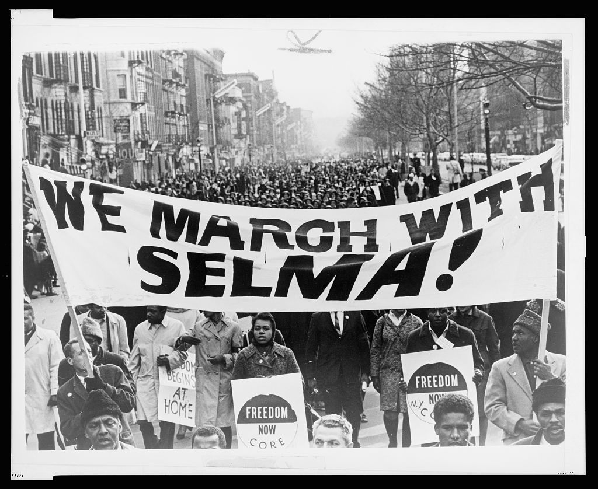
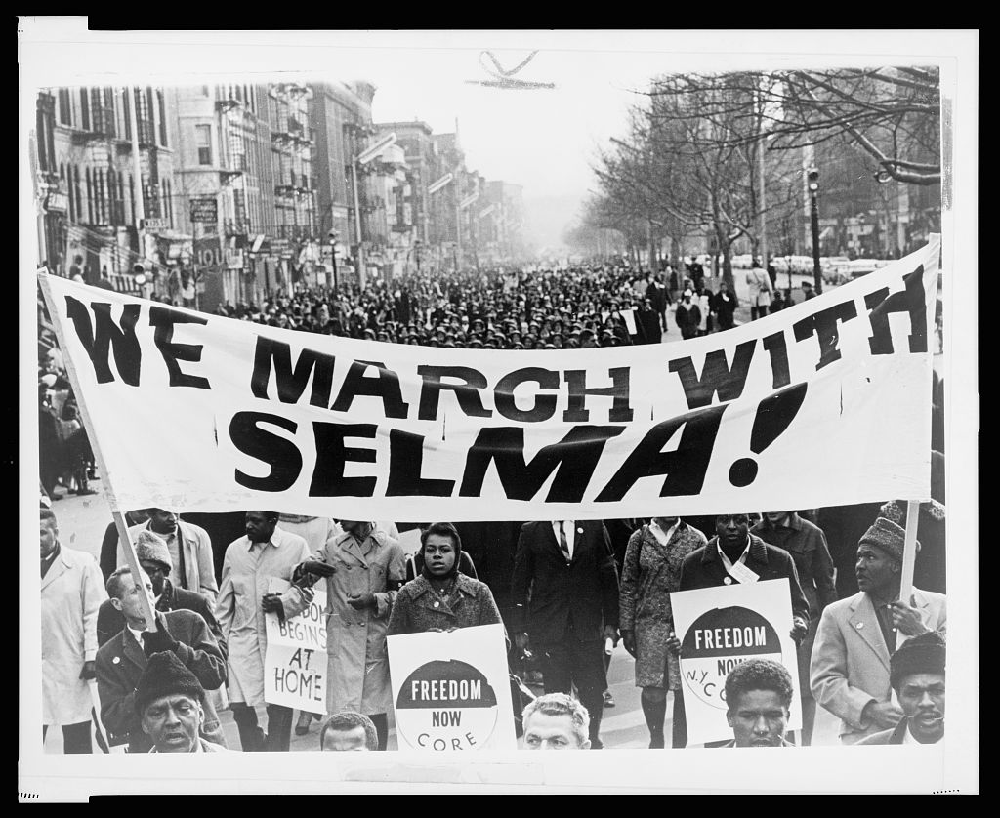
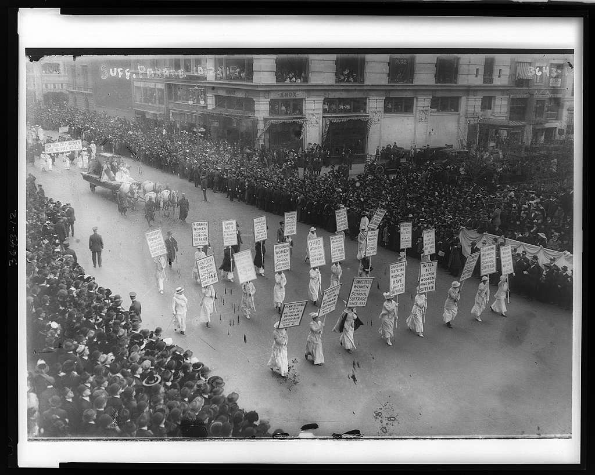
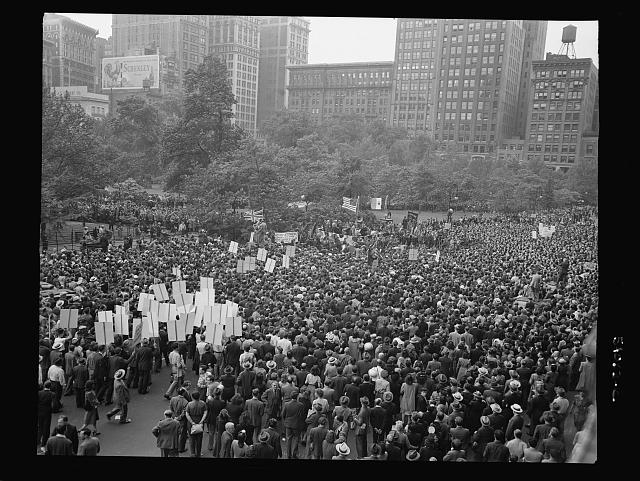
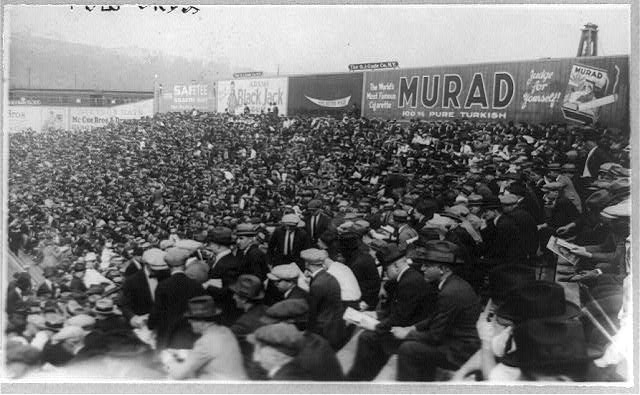
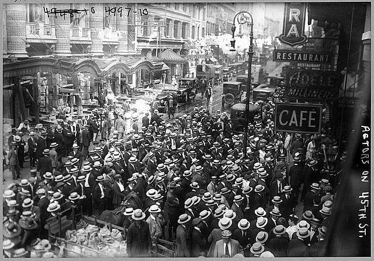
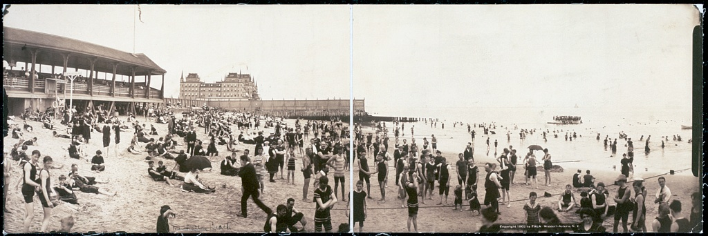

Marchers
Civil Rights Marchers in Harlem
A crowd of 15,000 marchers carrying a banner reading "We march with Selma!" gather on a street in Harlem to show solidarity with marchers in Selma. view at Library of Congress
New York has hosted crowds for many occasions over the years. Below are a few, from the historic, to the political, to the everyday.

Marchers
A crowd of 15,000 marchers carrying a banner reading "We march with Selma!" gather on a street in Harlem to show solidarity with marchers in Selma. view at Library of Congress

Marchers
Women did not get the right to vote until 1920 in the US. The Suffragist movement was key in winning that right. view at Library of Congress

Social Gathering
During the holidays New York has always been crowded. view at Library of Congress

Rally
D-day was the day that Allied forces entered France at the beaches of Normandy in World War II. The people in the crowd here in New York City are showing their support. view at Library of Congress

Social Gathering
People in the stadium for the first game of the World Series in the Polo Grounds. The Polo Grounds is where the New York Yankees used to play baseball. view at Library of Congress
Business
People working on the trading floor of the New York Stock Exchange. view at Library of Congress

Rally
New York has long been a hub for media and entertainment. Also for unscrupulous producers. This is most likely a strike by the Actor’s Equity Association, an actor's union. view at Library of Congress

Social Gathering
It can be easy to forget that most of New York is islands, but when it’s hot in the summer the beach is a popular place. view at Library of Congress